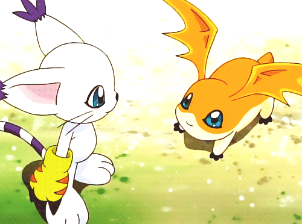

Após purificar e salvar Ogremon, vocês partem para a Native Florest atrás do digiovo sagrado que irá ajudar na luta contra Algomon. Na floresta vocês encontram Tailmon, que conta sobre a missão dos digimons sagrados e lhe entrega o digiovo da esperança. A floresta então é atacada por Etemon, um Digimon do nível perfeito. Você deve destruí-lo, porém ainda não está no nível de Etemon. O que você faz?